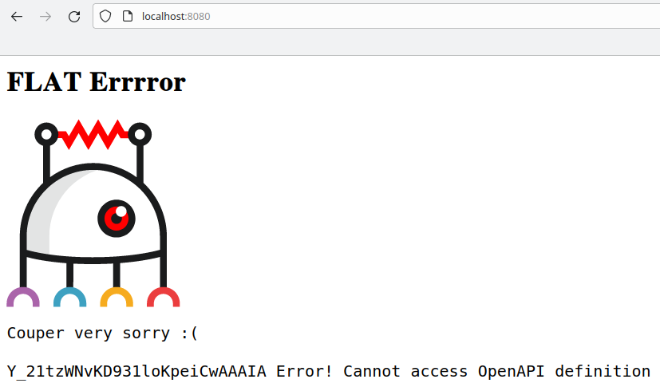
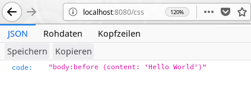

⚠️ Parts of this tutorial cover an older FLAT release and are outdated.
Hello World!
So you’re new on your job and your boss wants you to create an API for accessing programming language code snippets.
The design and frontend teams are already working on the user interface and can’t wait to access the API you’re about to create.
There you go! This tutorial helps you create a REST API for “Hello World” code snippets based on FLAT.
FLAT is supplied as a Docker image, so please make sure you have Docker installed on your system.
We assume you have the curl command line tool installed, too, which comes in handy when
working with REST APIs. The jq JSON processor
is a useful tool when working with JSON.
Let’s create a workspace for our little project. We call it hello-world and create a directory with that name:
$ mkdir ~/hello-world
Next, we create a simple docker-compose.yaml configuration inside hello-world:
services:
flat:
image: code-registry.avenga.cloud/product/flat/flat/flatrunner
ports:
- "8080:8080"
volumes:
- .:/app
Now we can start FLAT like this
$ docker compose --file ~/hello-world/docker-compose.yaml up
or from within our working directory:
$ cd ~/hello-world
$ docker compose up
📎 If you haven’t already guessed: You can stop FLAT at any time as usual by pressing Ctrl + C in its terminal.
Point your web browser to http://localhost:8080/ and see FLAT in action:

Or use curl on the command line in a new terminal:
$ curl localhost:8080
XNlS3M0L3o-5iHrwuGgNJQAAAI0: Error! Cannot access OpenAPI definition file at fit://site/swagger.yaml
Looks like there’s some kind of configuration missing here.
Currently, FLAT supports OpenAPI 2.0 also known as Swagger.
Let’s start with a minimal OpenAPI definition in a swagger.yaml file:
swagger: "2.0"
info:
version: "1.0"
title: Hello World!
paths:
/:
📎 OpenAPI definitions can be written in YAML or JSON. We recommend YAML for brevity and readability.
Now we get a different error message:
$ curl localhost:8080
{"error":{"message":"No flow or proxy found for GET \/","status":500, …}}
We’ll get rid of it in the next section.
The flow feature of FLAT gives us full control over request and response processing.
Let’s create a simple flow definition in hello.xml with an
echo action that produces a JSON snippet:
<flow>
<echo mime="application/json">{"Hello":"World"}</echo>
</flow>
Then we assign that flow to the path / in our swagger.yaml.
With x-flat-flow we tell FLAT to start the hello.xml flow whenever / is being requested:
…
paths:
/:
get: # ⬅
x-flat-flow: hello.xml # ⬅
📎 File paths are resolved relative to the location of the file they are referenced in. For
swagger.yamlandhello.xmlare in the same directory, we can simply use the filename here.
There we have our first “Hello World” snippet in JSON format:
$ curl --include localhost:8080
HTTP/1.1 200 OK
Date: Mon, 13 May 2019 11:48:35 GMT
Server: FLAT
Content-Length: 17
Content-Type: application/json
{"Hello":"World"}
Okay, let’s parametrize our requests and add a second language for “Hello World” snippets: CSS.
First, we add a path parameter for the language to the OpenAPI definition. That is,
the user has to provide the desired language in the request URI:
…
paths:
/{language}: # ⬅
get:
x-flat-flow: hello.xml
Then in our hello.xml we evaluate that path parameter to return the appropriate code snippet.
In the flow, path parameters can be accessed via $request/params/…. With the
<if>/<elseif>/<else> control structure we check the value of
$request/params/language and echo the respective snippet as JSON:
<flow>
<if test="$request/params/language = 'json'">
<echo mime="application/json">{"code": "{\"Hello\":\"World\"}"}</echo>
</if>
<elseif test="$request/params/language = 'css'">
<echo mime="application/json">{"code": "body:before {content: 'Hello World'}"}</echo>
</elseif>
<else>
<echo mime="application/json" status="404">{"code": "???"}</echo>
</else>
</flow>

Did you notice how we change the HTTP status code to 404 when the requested language is unsupported?
$ curl --include localhost:8080/foo
HTTP/1.1 404 Not Found
…
{"code": "???"}
📝 Exercise: Enhance the above flow so that it can output a JavaScript code snippet as well.
💡 Hint…
… </elseif> <elseif test="$request/params/language = 'javascript'"> <echo mime="application/json">{"code": "console.log('Hello World')"}</echo> </elseif> <else> …
Now we could add another language to our “Hello World” collection. And yet another, and… – Wait! Someone must have done this before, right?
Right! “Hello World” code snippets for many computer languages can of course be found on GitHub. The frontend developer team agrees that it would suffice if our API simply provides the URLs pointing to the code snippets rather than the snippets itself, for example
{"url":"https://raw.githubusercontent.com/leachim6/hello-world/HEAD/c/css.css"}
To give the other team something to base their work on, we’ll quickly set up some mock responses. To keep our flow readable and separate concerns let’s put the JSON responses into separate files:
$ mkdir ~/hello-world/files
$ cd ~/hello-world/files
$ echo '{"url":"https://raw.githubusercontent.com/leachim6/hello-world/blob/HEAD/j/json.json"}' > json.json
$ echo '{"url":"https://raw.githubusercontent.com/leachim6/hello-world/HEAD/c/css.css"}' > css.json
$ echo '{"url":"https://raw.githubusercontent.com/leachim6/hello-world/HEAD/j/javascript.js"}' > javascript.json
We replace our previous flow in hello.xml with a new one that accesses these files:
<flow>
<copy in="{concat('./files/', $request/params/language, '.json')}" out="$json"/>
<if test="$json">
<dump in="$json"/>
</if>
<else>
<echo mime="application/json" status="404">{"error": "Unknown language."}</echo>
</else>
</flow>
With the help of the concat function, the copy action assembles a filename
from the requested language and loads the file’s content into the $json variable.
If $json is not empty, the dump action then sends the content of $json as response.
Otherwise the echo action emits an error.
$ curl --include localhost:8080/css
HTTP/1.1 200 OK
…
Content-Type: application/json
{"url":"https://raw.githubusercontent.com/leachim6/hello-world/HEAD/c/css.css"}
$ curl --include localhost:8080/foo
HTTP/1.1 404 Not Found
…
Content-Type: application/json
{"error": "Unknown language"}
Great! The frontend guys are happy that they can already request our rudimentary API while they are developing the UI for it.
Let’s take another look at the code. Is it completely safe to use the $request/params/language
as we did above? Of course it’s not! Using input from the client without proper sanitizing beforehand is always dangerous!
📝 Exercise: “Hack” our API to gain access to arbitrary files in your app directory, for example the
swagger.yamlfile.💡 Hint…
Access to any file in our
~/hello-worlddirectory is possible by stuffing the whole file path into thelanguagepath parameter so that the filename assembled by theconcatfunction above looks likefiles/../swagger.yaml#.json.Forward slashes have to be URL encoded as
%2f, the hash tag#for stripping off the.jsonfilename extension has to be encoded as%23. Instead of%23you could also use%3ffor?or%3bfor;here:$ curl http://localhost:8080/..%2fswagger.yaml%23 swagger: "2.0" info: version: "1.0" title: Hello World! …Never use user input without checking it first!
We should fix that security threat by denying such potentially malicious requests.
One simple solution would be to allow alphanumeric characters for the language parameter only.
The matches function helps with that:
<flow>
<if test="not(matches($request/params/language, '^[a-zA-Z0-9]+$'))">
<echo mime="application/json" status="400">{"error": "Input validation failed!"}</echo>
</if>
…
Now we get:
$ curl --include http://localhost:8080/..%2fswagger.yaml%23
HTTP/1.1 400 Bad Request
…
{"error": "Input validation failed!"}
Okay, that works! But request validation is something that is supposed to be
done with the help of the OpenAPI definition. So we better put it in our swagger.yaml:
…
x-flat-flow: hello.xml
# ⬇ ⬇ ⬇
parameters:
- name: language
in: path
required: true
type: string
pattern: ^[a-zA-Z0-9]+$
Then we have to enable the request validation feature in the top-level section of swagger.yaml:
swagger: "2.0"
info:
version: "1.0"
title: Hello World!
x-flat-validate: # ⬅
request: true # ⬅
…
Let’s try again:
$ curl --silent localhost:8080/..%2fswagger.yaml%23 | jq
{
"error": {
"message": "Client request validation failed",
…
"info": [
"Pattern constraint violated in path for language: '../swagger.yaml#' does not match the pattern '^[a-zA-Z0-9]+$'."
]
}
}
📎 Note how we “pipe” the response from
curlthrough thejqcommand to get formatted JSON output.
Having verified that the built-in error message was triggered, we can now remove our homegrown request validation from the flow.
It’s time to gradually move away from our local mock responses and deal with some real
data from the hello-world repository at GitHub.
A suitable search request against the GitHub API for the C programming language for example looks like:
$ curl 'https://api.github.com/search/code?q=hello+repo:leachim6/hello-world+filename:C+language:C'
{
"total_count": 4,
"incomplete_results": false,
"items": [
{
"name": "c.c",
"path": "c/c.c",
…
"html_url": "https://github.com/leachim6/hello-world/blob/4b5ff1ef90ceb442f5633fc9e5d28297ac0f69ff/c/c.c",
"repository": {
…
},
"score": 12.970036
},
…
]
}
Whoa – that’s a lot to take in! Most of that 22 kB JSON response is irrelevant for us. Only the html_url field of the top-most ranked search result is the one that’s interesting.
As a first step, we store that JSON as a mock for an upstream response:
$ curl --output ~/hello-world/files/mock.json 'https://api.github.com/search/code?q=hello+repo:leachim6/hello-world+filename:C+language:C'
In the flow, we load that mock.json file with copy and throw away all unwanted fields and search results with the help of a template action:
<flow>
<!-- ⬇ ⬇ ⬇ -->
<copy in="files/mock.json"/>
<template out="$url">{{ items/value[1]/html_url ?? "" }}</template>
<if test="$url">
<template in="$url">{"url": {{ . }}}</template>
</if>
<!-- ⬆ ⬆ ⬆ -->
<else>
…
Let’s take a closer look. The copy action has no explicit out="…" and the following template has no in. That means, the latter operates on the output of copy which is the content of our mock.json representing the body of the upstream response.
The template action evaluates the expression between {{ and }} and stores its result in the variable $url as set by out. The expression itself extracts the wanted html_url property from the first object of the items array (items/value[1]).
If that property does not exist, the Null Coalescing Operator ?? sets the empty string "" as the result.
The rest of the flow is only slightly modified: We now check if we have content in $url and create the final JSON response with a second template. If $url is empty, we send the error response as before.
📎 Instead of using the
$urlvariable as input (in="$url") in the second template and operating on its content, we could have accessed$urldirectly inside the template:<!-- ⬇ ⬇ --> <template in="">{"url": {{ $url }}}</template>Note that we now explicitly omit the input using
in=""to prevent the unwanted default input from being loaded – which happens to be the huge JSON output from thecopyaction.
Here’s the result:
$ curl localhost:8080/c
{"url": "https://github.com/leachim6/hello-world/blob/4b5ff1ef90ceb442f5633fc9e5d28297ac0f69ff/c/c.c"}
Now let’s send a real request. Thanks to FLAT that is easy:
The request action sends an HTTP request to an upstream server and provides us
with the response.
The upstream URL is built with concat: As with the curl command from above we search for files containing the word hello in the leachim6/hello-world repository on GitHub.
Now we want the filename and the language to match our $request/params/language parameter.
For starters we simply dump the upstream response to see what we’re dealing with.
We also remove the copy action from above for now – we’ll get back to it later on:
<flow>
<request>
{
"url" : {{ concat("https://api.github.com/search/code",
"?q=hello",
"+repo:leachim6/hello-world",
"+filename:", $request/params/language,
"+language:", $request/params/language) }}
}
</request>
<dump/>
<template out="$url">{{ items/value[1]/html_url ?? "" }}</template>
…
</flow>
📎
dumphas no explicitinhere and just takes the output ofrequest.
Requesting /C should result in the same 22 kB JSON response as before – again formatted with jq for readability:
$ curl --silent localhost:8080/C | jq
However, requests for other languages such as /html or /Java are now possible, too.
So let’s remove that dump action again and send another request:
$ curl --silent localhost:8080/html
{"url": "https://github.com/leachim6/hello-world/blob/4b5ff1ef90ceb442f5633fc9e5d28297ac0f69ff/h/html.html"}
Almost! We now get in fact a filtered response from GitHub, but we’ve missed a tiny detail: The URL points to the HTML page with the code snippet on it instead of the snippet itself.
📝 Exercise: Use another
templateaction with appropriate string functions to modify$urlso that it points to the Raw view onraw.githubusercontent.com.💡 Hint…
… <if test="$url"> <template in="$url" out="$url"> {{ concat('https://raw.githubusercontent.com/leachim6/hello-world', substring-after(., '/blob')) }} </template> <template in="$url">{"url": {{ . }}}</template> </if> …Or, if you prefer using regular expressions:
<template in="$url" out="$url"> {{ replace(., "^.*/blob", "https://raw.githubusercontent.com/leachim6/hello-world") }} </template>
Great! Now that we’ve fixed that and $url references the right destination,
we can use curl to fetch a URL –
and immediately load the respective “Hello World” code snippet afterwards:
$ curl "$(curl --silent localhost:8080/html | jq --raw-output .url)"
<!DOCTYPE html>
<html>
<head>
<title>Hello World HTML</title>
</head>
<body>
<h1>Hello World</h1>
</body>
</html>
Often, the upstream API responses we build our applications upon are not cacheable at all. Therefore, they have to be fetched over and over again in every test run during development. Downloading large responses takes some time. Especially when dealing with a small scale upstream server, for example a test system, heavy testing may result in significant load and traffic on that system.
Hence, loading a local mock file with copy instead of waiting for a complete request/response
cycle of a real remote API call can speed up development notably.
So it might pay off to work with local mocks whenever possible. The following flow snippet featuring our copy action from before illustrates how this could look like:
<flow>
<if test="$request/get/mock or $request/headers/mock">
<!-- Use mock.json when requested for example with "?mock" or the header "Mock: 1" -->
<copy in="files/mock.json"/>
</if>
<else>
<request>
…
<request>
</else>
…
📎 Note that in
$request/headersthe header field names are lower-case.
Both
$ curl 'localhost:8080/html?mock'
and
$ curl --header Mock:1 localhost:8080/html
now return the URL from our local mock.json actually pointing to the C version of “Hello World”.
📎 Sending the header
Mock: truewill lead to different behavior as it enables FLAT’s built-in mock feature which allows you to specify mock responses in the OpenAPI definition.
To ensure that we don’t break our API while we are developing it further, let’s validate our responses, too. To do so, we add another schema for our own API responses to our swagger.yaml. That schema requires that the
url property exist in the response and point to raw.githubusercontent.com.
…
get:
x-flat-flow: hello.xml
parameters:
- name: language
…
pattern: ^[a-zA-Z0-9]+$
# ⬇ ⬇ ⬇
produces:
- application/json
responses:
200:
description: URL to a "Hello World" snippet
schema:
type: object
required:
- url
properties:
url:
type: string
pattern: ^https://raw.githubusercontent.com/
As before, the validation must be enabled in the top-level section:
swagger: "2.0"
info:
version: "1.0"
title: Hello World!
x-flat-validate:
request: true
response: true # ⬅
…
If we now alter the domain name in the second template of our flow to flaw.githubusercontent.com, we get a validation error:
$ curl --silent localhost:8080/json | jq
{
"error": {
"message": "Client response validation failed",
"status": 500,
"requestID": "XNrzofUrpUX@vMuN6J31EwAAADQ",
"info": [
"Pattern constraint violated in body for url: 'https://flaw.githubusercontent.com/leachim6/hello-world/a5df0ebf101fbb762604717ad10165ad7d4a5317/j/json.json' does not match the pattern '^https://raw.githubusercontent.com/'."
]
}
}
Instead of assembling the request URL with concat, we can configure it.
For better readability, we first move the request part into a
sub-flow –
a separate flow file that can be called from others flows like a subroutine:
<flow>
…
<else>
<sub-flow src="upstream_request.xml"/>
</else>
…
The request action now resides in upstream_request.xml:
<flow>
<request>
{
"url": {{ concat("https://api.github.com/search/code",
"?q=hello",
"+repo:leachim6/hello-world",
"+filename:", $request/params/language,
"+language:", $request/params/language) }}
}
</request>
</flow>
We can change that into the following, more readable code by using the
join function
on the individual $query_parameters to set the
query property of our request action:
<flow>
<template out="$query_parameters">
[
"q=hello",
"repo:leachim6/hello-world",
{{ concat("filename:", $request/params/language) }},
{{ concat("language:", $request/params/language) }}
]
</template>
<request>
{
"url": "https://api.github.com/search/code",
"query": {{ join(" ", $query_parameters) }}
}
</request>
</flow>
Besides validating incoming requests and the response our API generates, we can also enable validation for our upstream request to GitHub and the associated response.
So let’s enhance our request configuration in upstream_request.xml with some validation
options:
…
"query": {{ join(" ", $query_parameters) }},
{{// ⬇ ⬇ ⬇ ⬆ comma }}
"options": {
"definition": "upstream.yaml",
"validate-request": true
}
{{// ⬆ ⬆ ⬆ }}
}
</request>
</flow>
Furthermore, we need a second OpenAPI definition file (upstream.yaml)
that describes valid upstream requests along with the expected responses:
swagger: "2.0"
info:
version: "1.0"
title: GitHub Search API
host: api.github.com
schemes:
- https
paths:
/search/code:
get:
parameters:
- name: q
in: query
required: true
type: string
pattern: .
So far, this one checks that the query string actually contains a q parameter with an arbitrary string value.
📝 Exercise: Change the regular expression in
patternso that any invalid request query string is rejected with aPattern constraint violated in query for qerror in the FLAT runner log.💡 Hint…
pattern: ^hello repo:leachim6/hello-world filename:\w+ language:\w+$
Excellent! Now the validation will ruthlessly reveal our mistakes, when we continue working on our request configuration.
Next, we’ll take care of the responses: We enable validation for upstream responses
…
"validate-request": true, {{// ⬅ comma }}
"validate-response": true {{// ⬅ }}
}
}
</request>
</flow>
which we expect to be something like { "total_count": <integer>, "items": [ … ] }:
…
pattern: …
# ⬇ ⬇ ⬇
produces:
- application/json
responses:
200:
description: GitHub code search results
schema:
type: object
required:
- total_count
- items
properties:
total_count:
type: integer
items:
type: array
Now we’d immediately notice if GitHub changed relevant parts of its API that affect our “Hello World” API built on top of it.
To abort the flow in case the upstream request or response is invalid or the request fails outright, we add the exit-on-error request option:
…
"validate-response": true, {{// ⬅ comma }}
"exit-on-error": true {{// ⬅ }}
}
}
</request>
To see the effect, shorten the hello-world of the repository name to just hello in upstream_request.xml:
…
[
"q=hello",
"repo:leachim6/hello",
<!-- ⬆ ⬆ ⬆ -->
…
If we request our API
$ curl -si localhost:8080/html
instead of the output
HTTP/1.1 404 Not Found
…
{"error": "Unknown language"}
we now get
HTTP/1.1 502 Bad Gateway
…
{"error":{"message":"Upstream Response Validation Failed","status":502,"requestID":"main","info":["No definition for status code 422 and no 'default'.","Upstream status: 422 Unprocessable Entity"],"code":3203}}
If you prefer to provide a custom error document, you can configure an error flow. Just create error.xml:
<flow>
<template>
{
"CustomError": {
"Message": {{ $error/message }},
"Info": {{ $error/info }}
}
}
</template>
<set-response-headers>
{
"Status": {{ $error/status }},
"Error-Code": {{ $error/code }}
}
</set-response-headers>
</flow>
and reference it on the top level in swagger.yaml:
…
x-flat-error: # ⬅
flow: error.xml # ⬅ error flow
…
We now get
HTTP/1.1 502 Bad Gateway
…
Error-Code: 3202
…
{"CustomError":{"Message":"Upstream Response Validation Failed","Info":["No definition for status code 422 and no 'default'.","Upstream status: 422 Unprocessable Entity"]}}
Now revert the change to upstream_request.xml:
…
[
"q=hello",
"repo:leachim6/hello-world",
<!-- ⬆ ⬆ ⬆ -->
…
Currently we send an error response if our template expression
{{ items/value[1]/html_url ?? "" }} yields an empty string. A more straightforward way would be to simply check the number of results (total_count) that are returned:
<flow>
<if test="$request/get/mock or $request/headers/mock">
…
</else>
<!-- ⬇ ⬇ ⬇ -->
<template out="$count">{{ total_count ?? 0 }}</template>
<if test="$count > 0">
<template out="$url">
{{ concat('https://raw.githubusercontent.com/leachim6/hello-world',
substring-after(items/value[1]/html_url, '/blob')) }}
</template>
<template in="$url">{"url": {{ . }}}</template>
</if>
<!-- ⬆ ⬆ ⬆ -->
<else>
…
As before, the template for $count operates on the result of the previous request and therefore has no in="…".
Now we can completely do away with the else block if we change the above condition into 0 >= $count as the
echo action already finishes the request:
…
<if test="0 >= $count">
<echo mime="application/json" status="404">{"error": "Unknown language"}</echo>
</if>
<template out="$url">
{{ concat('https://raw.githubusercontent.com/leachim6/hello-world',
substring-after(items/value[1]/html_url, '/blob')) }}
</template>
<template in="$url">{"url": {{ . }}}</template>
</flow>
📝 Exercise: Maybe the condition
0 >= $counthurts your eyes, too. Swap the operands and use an appropriate comparison operator:$count … 0Beware – we’re in XML land here!💡 Hint…
To keep the XML well-formed when checking
$count <= 0we have to XML encode the<becoming<:… <if test="$count <= 0"> <echo …>…</echo> </if> …Yeah – that’s even worse! Less accurate, but probably sufficient may be just
$count = 0. Or maybenot($count > 0). You get the idea. Let’s stick with$count = 0.
Next, we are going to make the lengthy concat expression more readable by introducing
template variables.
That leaves us with one single template action producing the final output:
…
</if>
<template>
{{$repo_url := "https://raw.githubusercontent.com/leachim6/hello-world" }}
{{$file_path := substring-after(items/value[1]/html_url, '/blob') }}
{"url": {{ concat($repo_url, $file_path) }}}
</template>
</flow>
Or, if you chose the regular expression solution above, you might prefer keeping the replace function:
<template>
{{$repo_url := "https://raw.githubusercontent.com/leachim6/hello-world" }}
{"url": {{ replace(items/value[1]/html_url, "^.*/blob", $repo_url) }}}
</template>
⚠️ This section is outdated!
Consider the following situation: After a few weeks of live operation, your manager calls and informs you that the “Hello World” API has stopped functioning. He urges you to fix it as soon as possible. Let’s see for ourselves:
$ curl localhost:8080/html
{"error": "Unknown language"}
Sigh! So how do we find out what is going wrong?
In the default setup, the FLAT runner only logs severe errors to the log file and outputs them on the command line. If we want to get more information about what’s happening, we have to change FLAT’s debug settings. On startup, we can either set the environment variable
$FLAT_DEBUG
$ FLAT_DEBUG='*:debug:log' flat start ~/hello-world
or use the -d option
$ flat start -d '*:debug:log' ~/hello-world
📎 Mind the
'quoting to prevent the shell from expanding*.
Both commands start FLAT with the debug log level lowered from error to debug.
The * stands for any topic. log means that debug information will be written to the log file.
📎
'*:debug:log'is in fact the same as if we’ve just written'*:debug'or even'*'.
So when we now request our API, a lot of information from the log file will be output on the terminal where we started FLAT. We can now browse through that pile of text or use a more specific topic. For example, if we were only interested in messages related to our template and echo actions we could set the debug topic to template,echo:
$ flat start -d template,echo ~/hello-world
However, changing the default debug settings and restarting FLAT every time is not the proper way to go. Instead, we can simply send an appropriate Debug header with our request:
$ curl --header Debug:template,echo localhost:8080/html
If we also set the debug sink to inline or append, the output
will be included in the HTTP response rather than the log file, for example:
$ curl --header Debug:time:debug:inline localhost:8080/html
The latter is the only reasonable way to debug on a production system where we usually don’t want to flood the logs with debug output. To enable header debugging,
the environment variable $FLAT_DEBUG_ALLOW_HEADER must be set to true.
📎 If the
$FLAT_DEBUG_AUTHenvironment variable is set (this is a must on production systems!), FLAT requires a password to enable debugging by means of theDebugheader, for example--header 'Debug: *:warn:append; auth=Pa5sw0rd'.
Besides the built-in debug information, custom debug output can help understand the flow process. The debug action enables us to insert our own log lines into the flow, for example
<flow>
<debug level="info" in="$request"/>
…
The complete configuration files can be found in the companion repository FLAT tutorial files.